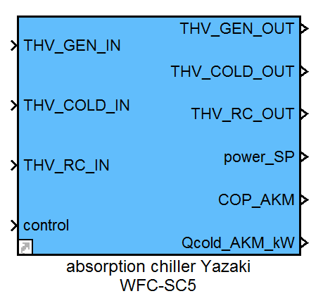

absorption chiller Yazaki WFC-SC5
Path: CARNOT/New Blocks
Purpose
This block calculates the capacities and cop of the absorption chiller Yazaki WFC-SC5 (nominal cooling capacity: 17.6 kW, nominal COP: 0.7) based on measured curves.
Description
The capacities and cop are calculated by lookup-tables for the three capacities dependent on the three input temperatures, based on measured data.
The block includes a dynamic start-up behaviour with a dead time of the cooling capacity and capacities in all cycles.
The dead time depends on the mean generator temperature at start.

Additionally the power of the solution pump is given out.
Inputs:
- THV_GEN_IN: Thermo-hydraulic vector generator (HT) cycle input
- THV_COLD_IN: Thermo-hydraulic vector cooling (LT) cycle input
- THV_RC_IN: Thermo-hydraulic vector recooling (MT) cycle input
- control: 0/1
Outputs:
- THV_GEN_OUT: Thermo-hydraulic vector generator (HT) cycle output
- THV_COLD_OUT: Thermo-hydraulic vector cooling (LT) cycle output
- THV_RC_OUT: Thermo-hydraulic vector recooling (MT) cycle output
- power_SP: electrical power of the solution pump in W
- COP_AKM
- Qcold_AKM_kW: cooling power in kW
NOTE:
The measured curves are only valid for the following volumeflows:
HT: 4320 l/h, MT: 9180 l/h, LT: 2770 l/h
Measurement range: T_HT_IN 70 .. 88 °C, T_MT_IN 29 .. 33 °C, T_NT_IN 11 .. 14 °C
Outside of this range the lookup-tables extrapolate.
Additional files:
The lookup-tables use data of the Variables WFC_q_hot, WFC_q_recooling and WFC_q_cold, which are stored in Yazaki_KF.mat and loaded as a PreLoad-Function.

Parameters and Dialog Box

Characteristics
Direct Feedthrough Yes
Sample time Inherited from driving block
Vectorized No